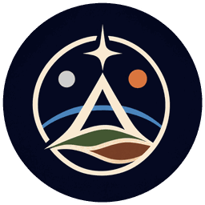
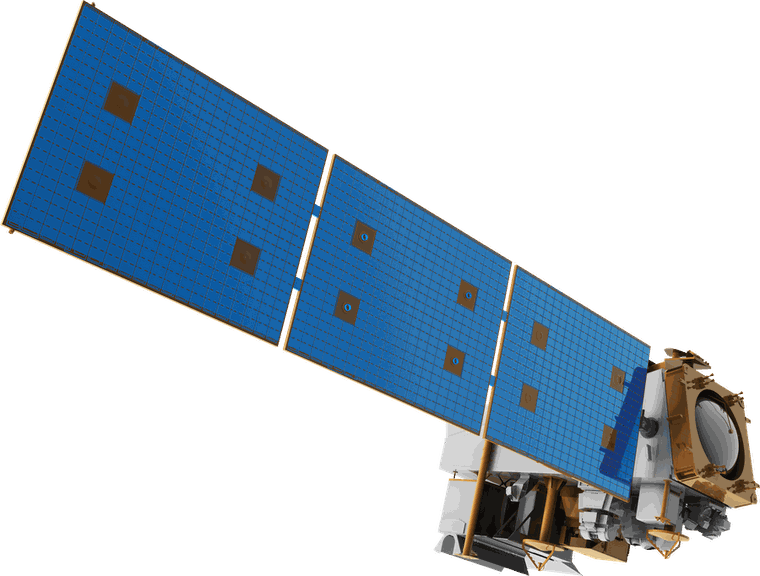
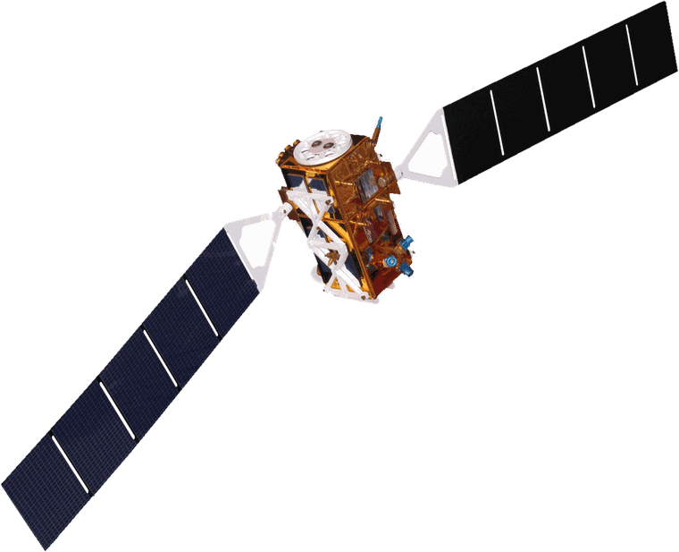
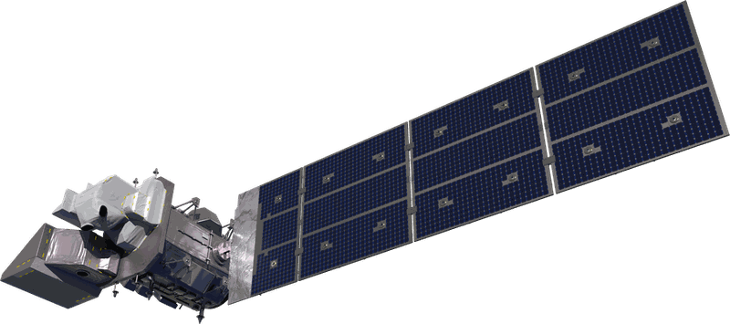

Sobresaturación geográfica
Atacama, Hawái, Islandia y la Antártida concentran gran parte de la literatura, dejando fuera volcanes, salares y tubos de lava en los Andes y el Pacífico.

ATLANIA


Somewhere between Earth and the stars.
¿Y si para comprender otros planetas primero tuviéramos que volver a descubrir el nuestro?
Las misiones Artemis y Marte necesitan entrenar rovers, trajes y hábitats en la Tierra, pero el método actual tiene tres limitaciones claras:
Atacama, Hawái, Islandia y la Antártida concentran gran parte de la literatura, dejando fuera volcanes, salares y tubos de lava en los Andes y el Pacífico.
Que un paisaje se parezca en fotografía no garantiza equivalencia térmica, topográfica ni operacional para probar hardware espacial.
Ningún sitio terrestre replica gravedad lunar o marciana, vacío ni radiación; no documentar dónde se rompe la analogía invalida las pruebas.
Creamos ATLANIA para transformar datos climáticos y topográficos en un índice auditable de similitud planetaria.
100% con climatología real de NASA POWER y relieve medido, incluyendo 8 sitios en Ecuador.
Ponderación científica adaptada a cada misión: hielo polar, refugio en cuevas o deltas marcianos.
Topografía, geología, térmica, hidrología/hielo y entorno subterráneo, más agrupamiento K-Means.
Shackleton Crater (Polo Sur, volátiles) · Mare Tranquillitatis (tubos de lava) · Mons Mouton (meseta de aterrizaje Artemis III)
Jezero Crater (delta lacustre, Perseverance) · Olympus Mons (flanco volcánico) · Valles Marineris (cañón tectónico y sulfatos)
El motor en Python (asi_engine.py) cruza datos medidos con límites físicos explícitos por cada sitio:
7 parámetros: temperatura máx/mín, precipitación, viento, humedad relativa, irradiancia solar y presión superficial.
Muestreo de 5 puntos en cruz (GLO-90) para calcular pendiente central en grados y rugosidad real del terreno.
Similitud acotada en 5 dimensiones, estandarización z-score, K-Means determinista y vecinos más cercanos (k-NN).
Documenta dónde falla cada comparación: gravedad (9.81 vs 1.62/3.71 m/s²), vacío/CO₂, radiación y biología.
Sondeo en vivo (/api/evaluate): Evalúa cualquier coordenada de la Tierra al instante con NASA POWER y el DEM, dejando la geología no medida en cero para no inventar datos.
Reproducibilidad: 45 pruebas automatizadas en pytest + suite en frontend, y catálogo precalculado con respaldo offline si cae la red.
En Terra Explorer recorremos el catálogo global, inspeccionamos sitios sub-explorados y sondeamos coordenadas en tiempo real.
Ir a Terra Explorer (/explorer) ↗Seleccionar Mare Tranquillitatis o Jezero Crater y observar cómo cambia el ranking de los 35 sitios.
Abrir el radar de 5 ejes de Galápagos Lava Tubes (87.5/100) o Chimborazo y revisar sus fortalezas y límites.
Hacer clic en cualquier punto del mapa 3D para consultar NASA POWER en vivo y descargar el dossier en GeoJSON.
Los tubos de lava de Galápagos alcanzan 87.5 / 100 frente a Mare Tranquillitatis — el segundo puntaje más alto de los 35 sitios del planeta.
Evaluamos 8 enclaves en Ecuador: Galápagos y Sierra Negra para hábitats subterráneos; Quilotoa, El Reventador y Sangay frente a Valles Marineris; y Antisana, Chimborazo y Cotopaxi para pruebas de movilidad y perforación en alta montaña.
Adopción abierta y sin costos de licencia: Construido sobre APIs públicas gratuitas y código abierto (MIT).
Permite a universidades, grupos de robótica y agencias filtrar dónde hacer campañas de campo y exportar resultados directamente a QGIS sin meses de prospección previa.
Integrar reflectancia espectral (Landsat 9 OLI-2 / ASTER) y radar Sentinel-1 C-SAR para medir geología y rugosidad automáticamente.
Campañas conjuntas con facultades de geología y robótica en Ecuador para contrastar el índice con mediciones en campo.
Apertura del repositorio para que investigadores sumen nuevos sitios candidatos con revisión reproducible.
"ATLANIA: transformando datos abiertos de la NASA en la hoja de ruta terrestre hacia la Luna y Marte. Muchas gracias."